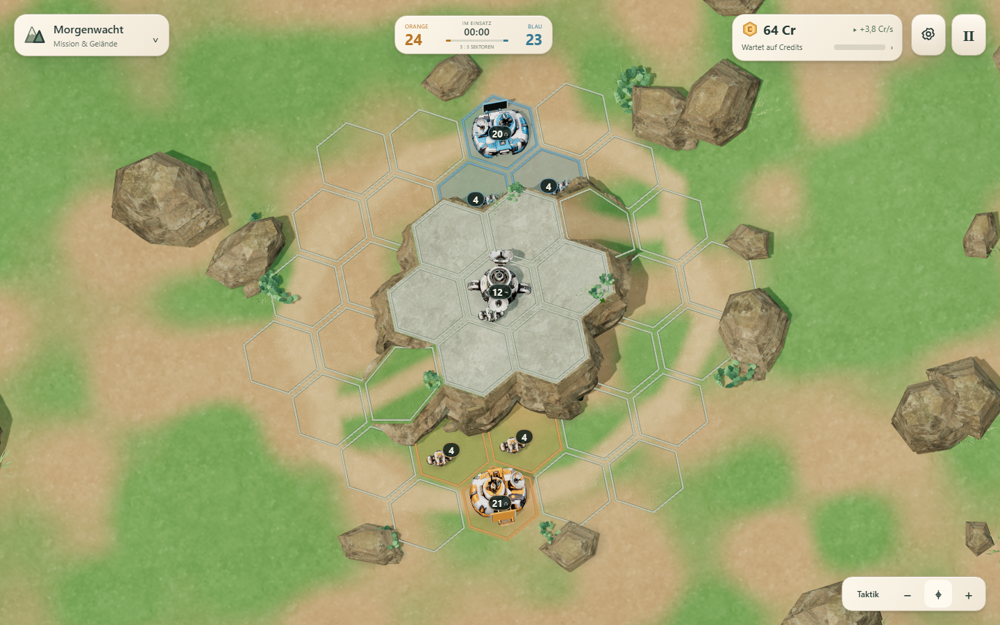
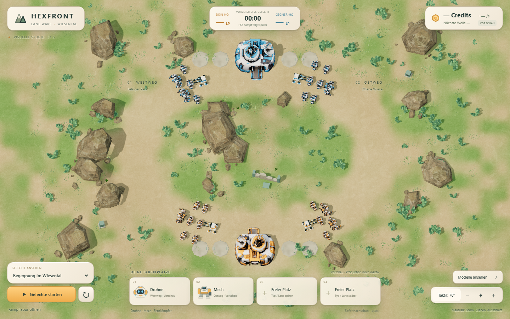
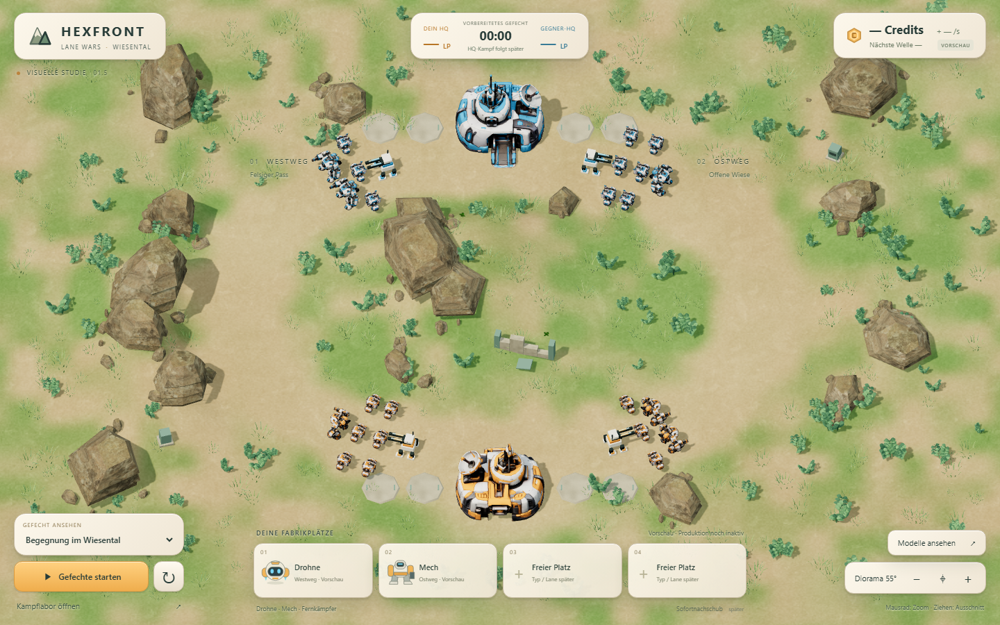
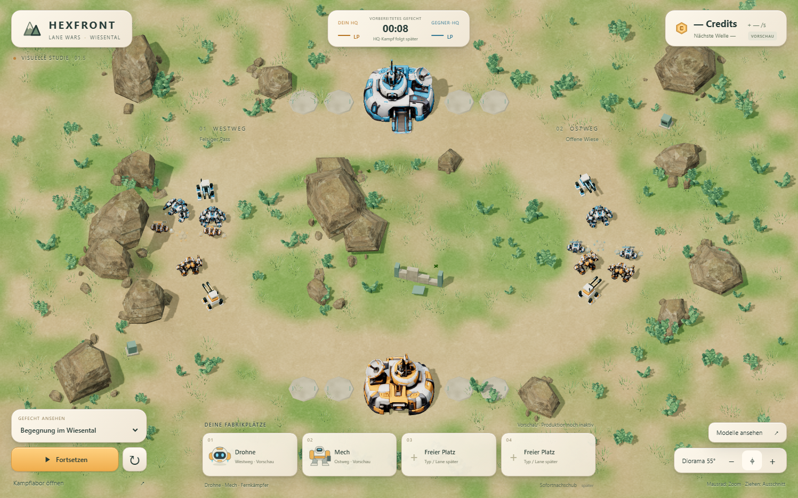
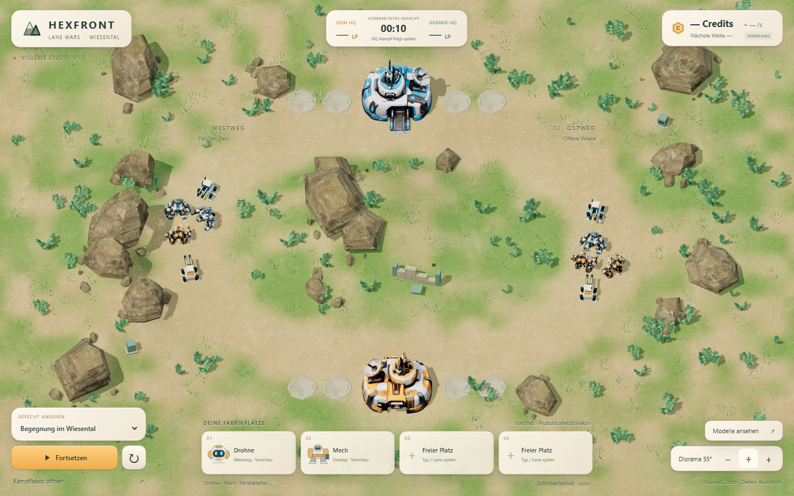
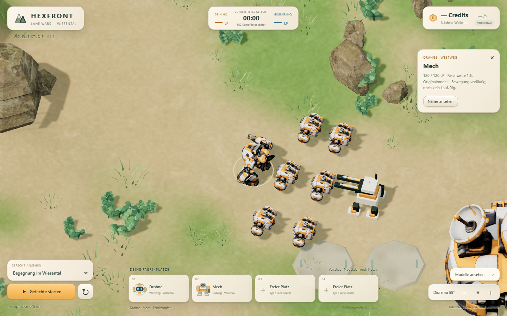
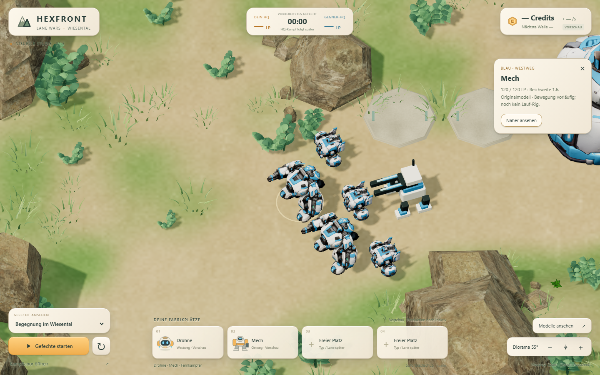
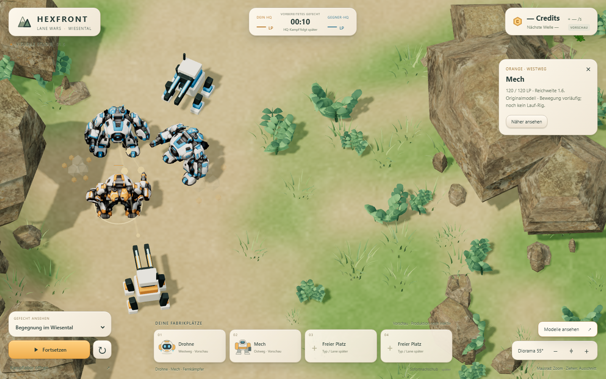

Mixed Squads → Lane Wars · gleicher Kamerawinkel


Die neue Standardansicht verwendet 55°: Die Fronten und Silhouetten der Roboter sind damit deutlicher zu sehen. Beide HQs bleiben im normalen Desktopausschnitt sichtbar. Die längeren Routen sind gleich lang und rein visuell; Felsen und Höhen verändern keine Kampfergebnisse.
Gesamtes Schlachtfeld · normale 55°-Ansicht

Gefechte und HUD


Modelle beider Fraktionen · echte Nahansichten



26 / 26Headless-Tests bestanden, davon 22 ursprüngliche M1-Tests.
2.025Balance-Gefechte; Ergebnisdatei bytegleich zu M1.
13 Gefechte7 Laborszenarien + 6 visuelle Lane-Gefechte: Browser und Headless identisch.
Kritische Bewertung
Die gemeinsame HEXFRONT-Identität ist durch Originalmodelle, echte Materialdetails, Felsen, Wiesenlicht und Keramik-HUD erkennbar. Die Wege nutzen deutlich mehr Bildschirmbreite als die erste Testbahn. Noch sichtbar vorläufig sind das einfache Fernkampfmodell, die starren Mech-Beine und die wenig ausgearbeiteten Ruinen. Bei 1100 × 750 bleibt die Übersicht bedienbar, doch die Drohnen sind kleiner; schmale Hochformatansichten dienen derzeit nur als Übersicht und benötigen Zoom zur Modellbetrachtung. Dies ist eine Desktop-Vorschau des visuellen Meilensteins, noch keine fertige Fabrikstrategie.